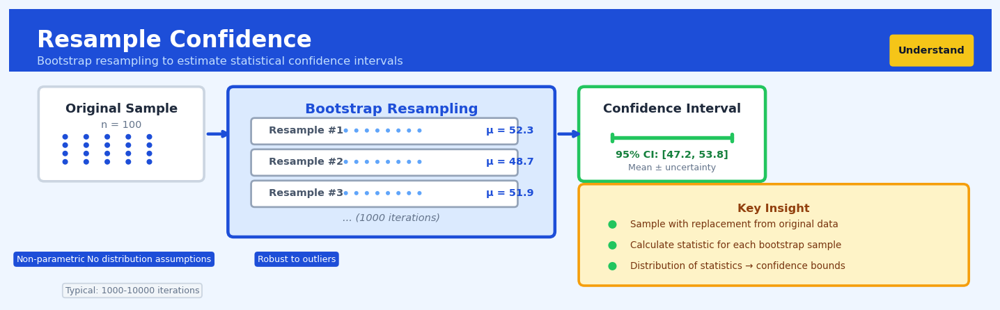

Resample Confidence#


The most common mistake with bootstrap confidence intervals is treating them as exact probability statements about parameters when they're really about the variability of your estimator across hypothetical repeated samples. Always remember that bootstrapping assumes your sample is representative of the population, so if you've got selection bias or a tiny sample size, resampling won't magically fix those fundamental issues. I typically recommend at least 30-50 observations before trusting bootstrap CIs, and always validate assumptions with diagnostic plots of the bootstrap distribution.
The 60-Second Version#
What it does: Resample Confidence tells you how trustworthy a number is by simulating thousands of alternative scenarios from your existing data.
When to use it: You’ve calculated something important—average customer lifetime value, conversion rate difference, or any metric—and need to know if it’s reliable enough to bet resources on.
What you get back: A range showing where the true value likely falls, letting you distinguish between “we’re 95% sure profit margin improved by 3-7%” and “it could be anywhere from -2% to +12%.”
Difficulty |
Moderate |
Typical runtime |
Seconds to minutes on 100K rows |
What you bring |
Your dataset and the metric you care about |
What you get |
A confidence interval (lower bound, upper bound) |
Heuristix bucket |
Understand — Statistical Analysis & Profiling |
The method doesn’t create new information—it quantifies the uncertainty already present in your sample, so narrow intervals require sufficient data, not just more resamples.
Learning Objectives#
After reading this chapter, a business user will be able to:
Identify situations where traditional confidence intervals fail—such as when analyzing median customer spend, conversion rate ratios, or custom KPIs—and recognize when resampling methods provide a more reliable solution.
Interpret bootstrap confidence interval outputs by explaining the range of plausible values for a metric to stakeholders, distinguishing between statistical uncertainty and practical significance for business decisions.
Decide whether observed differences between two groups or time periods are likely due to chance by checking if their resampled confidence intervals overlap, enabling informed go/no-go decisions on initiatives.
After reading this chapter, a data scientist will be able to:
Implement bootstrap confidence intervals for arbitrary statistics using appropriate resampling procedures, handle stratified sampling when subgroups matter, and apply bias correction methods when the bootstrap distribution is skewed.
Set the number of bootstrap iterations by balancing computational cost against interval stability, and choose between percentile, BCa, and other interval methods based on the distribution characteristics of the statistic.
Diagnose bootstrap failures by detecting inadequate sample sizes, identifying statistics with unstable resampling behavior, and recognizing when parametric or alternative approaches would be more appropriate than resampling methods.
Overview#
Resample Confidence is a nonparametric statistical technique that uses resampling methods—primarily bootstrapping—to construct confidence intervals for arbitrary statistics without relying on distributional assumptions. By repeatedly drawing samples with replacement from the observed data and computing the statistic of interest on each resample, the method empirically approximates the sampling distribution of the estimator. This approach belongs to the broader family of computational inference methods and is particularly valuable when closed-form expressions for standard errors are unavailable, the underlying distribution is unknown or non-normal, or the statistic of interest is complex (ratios, medians, quantiles, or custom business metrics).
When to Use This#
Use this when:
The statistic lacks a closed-form standard error — Many business metrics (e.g., ratio of totals, trimmed means, or custom KPIs) do not have tractable variance formulas; bootstrap confidence intervals provide a principled alternative.
The underlying distribution is unknown or non-normal — When data exhibit heavy tails, skewness, or multimodality, parametric confidence intervals based on normality assumptions may be invalid; resampling adapts to the empirical distribution.
Sample sizes are moderate and asymptotic approximations are questionable — For samples in the range of 30–500 observations, asymptotic normality may not yet hold; bootstrap intervals often provide better finite-sample coverage.
You need confidence intervals for quantiles or order statistics — Estimating uncertainty around medians, percentiles, or Value-at-Risk measures is analytically complex; bootstrapping handles these naturally.
Comparing complex statistics between groups — When comparing differences in medians, ratios, or custom metrics between treatment and control groups, bootstrap intervals avoid restrictive parametric assumptions.
Validating model performance metrics with uncertainty quantification — Model accuracy, AUC, F1-scores, or RMSE on held-out data can be bootstrapped to understand their variability and construct confidence intervals.
The data contain dependencies that require specialised resampling — Block bootstrap variants (available via configuration) can handle time series or clustered data where standard i.i.d. assumptions fail.
Do NOT use this when:
Sample size is very small (n < 15) — Bootstrap intervals require sufficient data to approximate the population distribution; with tiny samples, the empirical distribution is too coarse.
A well-established parametric method exists and assumptions are met — For means of normally distributed data, the classical t-interval is more efficient and should be preferred.
Computational resources are severely constrained and results are needed instantly — Generating thousands of resamples incurs computational cost; for real-time applications with strict latency requirements, analytical methods may be necessary.
Questions This Answers#
Understanding Uncertainty in Performance Metrics#
Is our 23% conversion rate improvement this quarter real, or could it just be random variation?
Our new product manager increased average order value by $47 — how confident can we be that this wasn’t just luck?
We’re seeing a 15% churn reduction after the onboarding redesign, but what’s the realistic range we should expect going forward?
The mobile app shows 8% higher engagement than web — is this difference statistically meaningful enough to shift our investment?
Our customer satisfaction score jumped from 7.2 to 7.8 this month — should we celebrate or wait to see if it holds?
Comparing Options Without Clean Data#
Which of our three pricing models actually generates more revenue per customer when we account for all the uncertainty?
Is the ROI on our email campaign (currently showing 340%) really better than social (showing 280%), or are they statistically similar?
We tested two checkout flows and one has 3% better completion — is that enough to justify the engineering effort to roll it out?
Our Chicago store’s profit margin is 12% while Atlanta’s is 9.5% — is Chicago genuinely outperforming or just getting lucky with customer mix?
Making Decisions with Complex or Custom Metrics#
What’s a realistic range for next quarter’s customer lifetime value given how volatile our retention has been?
We track a custom health score combining five factors — how reliable is the 18-point improvement we’re seeing in enterprise accounts?
Our repeat purchase rate divided by acquisition cost gives us 2.4 — what’s the confidence interval around that ratio?
If we forecast 50th percentile sales at \(2.1M and 90th percentile at \)3.8M, how much uncertainty should we build into the budget?
How It Works#
Imagine you’re a coffee shop owner trying to estimate your average Saturday revenue, but you’ve only recorded sales for eight Saturdays. You can’t go back in time to collect more data, but you need to know: “How confident am I that my calculated average reflects reality?” Here’s what you do: you write each Saturday’s revenue on a separate card, shuffle them in a hat, and randomly draw eight cards with replacement (meaning you put each card back after drawing it). Some Saturdays appear twice in your new sample, others not at all. You calculate the average of this reshuffled set. Then you repeat this process hundreds of times, creating hundreds of slightly different “alternate reality” averages. The range where most of these averages land becomes your confidence interval—a honest statement of your uncertainty given limited data.
ORIGINAL DATA (8 Saturdays) BOOTSTRAP PROCESS
┌────────────────────┐
│ $450, $520, $380, │ Draw with replacement
│ $490, $510, $470, │──────────────→ (same size as original)
│ $500, $430 │ Repeat 1,000 times
└────────────────────┘
↓ Calculate ↓ Calculate each
Mean = $469
Sample 1: $450,$450,$520,$490,...
Mean = $475
Sample 2: $380,$510,$500,$520,...
Mean = $463
Sample 3: $470,$490,$430,$470,...
Mean = $471
⋮
Sample 1000: ...
Mean = $468
RESULT: CONFIDENCE INTERVAL ↓ Sort all 1,000 means
┌──────────────────────────────┐ $420 ████░░░░░░░░░░░░░░ $520
│ 95% of bootstrap means │ ▲ ▲
│ fall between $440 - $495 │ │ │
│ │ Lower bound Upper bound
│ "We're 95% confident the │ (2.5th %ile) (97.5th %ile)
│ true average is in range" │
└──────────────────────────────┘
Step 1: Start with your actual observed data. You have a dataset—maybe it’s customer satisfaction scores, delivery times, or sales figures. This is your ground truth, the only real information you possess about the world.
Step 2: Create a “resample” by randomly drawing from your data with replacement. Imagine pulling items from your dataset one at a time, but after each pull, you toss that item back in before the next draw. This means some observations appear multiple times in your resample, while others don’t appear at all. Your resample has the same size as your original dataset.
Step 3: Calculate your statistic of interest on this resample. Whatever you’re trying to measure—average, median, difference between groups, conversion rate—compute it for this reshuffled version of your data. Write down that number.
Step 4: Repeat steps two and three many times. Typically you’d do this anywhere from one thousand to ten thousand times. Each iteration gives you a slightly different value for your statistic because each resample is slightly different.
Step 5: Examine the distribution of all these calculated values. You now have thousands of statistics from thousands of alternate resamples. Sort them from smallest to largest and look at where they cluster.
Step 6: Extract your confidence interval from the middle range. For a ninety-five percent confidence interval, you’d cut off the bottom two-point-five percent and top two-point-five percent of your sorted values. The remaining range represents where your statistic would likely fall if you could somehow repeat your data collection process.
The key insight: By treating your sample as a mini-universe and resampling from it, you simulate what would happen if you could collect your data over and over again—letting the data reveal its own uncertainty without assuming anything about its underlying mathematical shape.
The Intuition#
Imagine you are a quality control manager at a manufacturing plant, and you have measured the tensile strength of 100 steel rods from today’s production batch. You calculate the average strength and want to report how confident you are in this number—but you only have this one batch of data. In an ideal world, you would produce thousands of batches, measure them all, and observe how the average varies across batches. This would give you the sampling distribution of the mean directly. But you cannot do this; you have only one sample.
The bootstrap offers an ingenious solution: treat your observed sample as a stand-in for the entire population. If the population is well-represented by your 100 observations, then drawing new “batches” with replacement from these 100 values simulates what would happen if you could repeatedly sample from the true population. Each time you draw a new bootstrap sample (also of size 100), you compute the average tensile strength. After repeating this process 10,000 times, you have 10,000 bootstrap averages. The spread of these averages tells you how much variability you should expect in your original estimate.
The key insight is that the relationship between the bootstrap distribution and the sample mirrors the relationship between the true sampling distribution and the population. If the bootstrap averages spread over a range of 5 units, it suggests that the true sampling distribution likely has similar variability. You can then read off confidence intervals directly from the percentiles of these bootstrap values—for example, taking the 2.5th and 97.5th percentiles gives you a 95% confidence interval.
This approach is remarkably flexible because it makes no assumptions about the shape of the underlying distribution. Whether your data are symmetric, skewed, bimodal, or follow some exotic distribution, the bootstrap adapts. Moreover, the method applies to any statistic you can compute—not just means, but medians, standard deviations, correlation coefficients, regression parameters, or arbitrarily complex business metrics. As long as you can write code to compute the statistic from a dataset, you can bootstrap it.
The Mathematics#
Problem Setup and Notation#
Let \(X_1, X_2, \ldots, X_n\) be an independent and identically distributed (i.i.d.) sample from an unknown distribution \(F\) with finite variance. We are interested in a parameter \(\theta = T(F)\), which is a functional of the distribution. The sample estimate is:
where \(\hat{F}_n\) denotes the empirical distribution function that places mass \(1/n\) on each observed value \(X_i\).
Our goal is to construct a confidence interval for \(\theta\) that achieves nominal coverage probability \(1 - \alpha\).
The Bootstrap Principle#
The bootstrap principle, introduced by Efron (1979), approximates the sampling distribution of \(\hat{\theta} - \theta\) by the bootstrap distribution of \(\hat{\theta}^* - \hat{\theta}\), where \(\hat{\theta}^*\) is computed from a bootstrap sample.
A bootstrap sample \(X_1^*, X_2^*, \ldots, X_n^*\) is obtained by drawing \(n\) observations with replacement from the original sample. The bootstrap statistic is:
where \(\hat{F}_n^*\) is the empirical distribution of the bootstrap sample.
Bootstrap Algorithm#
The nonparametric bootstrap proceeds as follows:
For \(b = 1, 2, \ldots, B\):
Draw a sample \((X_1^{*b}, X_2^{*b}, \ldots, X_n^{*b})\) with replacement from \((X_1, X_2, \ldots, X_n)\)
Compute \(\hat{\theta}^{*b} = T(\hat{F}_n^{*b})\)
Use the empirical distribution of \(\{\hat{\theta}^{*1}, \hat{\theta}^{*2}, \ldots, \hat{\theta}^{*B}\}\) to estimate properties of the sampling distribution.
The bootstrap variance estimator is:
where \(\bar{\theta}^* = B^{-1} \sum_{b=1}^{B} \hat{\theta}^{*b}\).
Confidence Interval Methods#
Percentile Method#
The simplest approach takes quantiles of the bootstrap distribution directly:
where \(\hat{\theta}^*_{(q)}\) denotes the \(q\)-th quantile of the bootstrap distribution.
Basic (Reverse Percentile) Method#
The basic method inverts the percentile logic:
This method reflects the bootstrap distribution around \(\hat{\theta}\).
Bias-Corrected and Accelerated (BCa) Method#
The BCa method, developed by Efron (1987), adjusts for both bias and skewness. Define the bias-correction factor:
where \(\Phi^{-1}\) is the standard normal quantile function.
The acceleration parameter \(\hat{a}\) is estimated using jackknife values:
where \(\hat{\theta}_{(-i)}\) is the statistic computed with observation \(i\) removed, and \(\bar{\theta}_{(\cdot)} = n^{-1} \sum_{i=1}^{n} \hat{\theta}_{(-i)}\).
The adjusted quantiles are:
The BCa interval is then:
Assumptions#
Independence: Observations must be independent (or appropriate block bootstrap must be used for dependent data).
Representativeness: The sample must adequately represent the population structure.
Smoothness: For consistent bootstrap inference, the statistic \(T\) should be sufficiently smooth as a functional of the empirical distribution.
Finite moments: The statistic should have finite variance under the true distribution.
Asymptotic Properties#
Under regularity conditions, the bootstrap is consistent:
where \(P^*\) denotes probability under bootstrap resampling.
The BCa method achieves second-order accuracy, meaning coverage error is \(O(n^{-1})\) rather than \(O(n^{-1/2})\) for the percentile method.
Edge Cases#
Discrete data with few unique values: The bootstrap may produce degenerate resamples; consider smoothed bootstrap alternatives.
Extreme quantiles: Bootstrapping the 99th percentile with small samples produces high variance; increase \(B\) substantially.
Statistics with bounded domains: If \(\theta \in [0, 1]\), percentile intervals naturally respect bounds, but BCa corrections may occasionally fall outside.
Understanding the Mathematics#
The Bootstrap Sample#
The equation:
Read it aloud:
“A bootstrap sample, labeled b, is a set containing n observations drawn randomly with replacement from our original data.”
What each symbol means:
\(X^*_b\) = the b-th bootstrap sample (a new dataset we’ve created)
\(x^*_{b,i}\) = the i-th observation in bootstrap sample b
\(n\) = the number of observations (same size as our original dataset)
The asterisk (*) = indicates this is resampled data, not original data
A concrete numerical example:
Your original dataset contains 5 customer satisfaction scores: [72, 85, 91, 68, 79]. You draw with replacement to create bootstrap sample 1. You randomly pick: the 3rd value (91), then the 3rd again (91), then the 1st (72), then the 5th (79), then the 2nd (85). So \(X^*_1 = \{91, 91, 72, 79, 85\}\). Notice that 91 appears twice and 68 doesn’t appear at all—that’s replacement in action.
Why this equation matters:
Creating bootstrap samples is the engine that powers everything else—without resampling our data many times, we have no way to approximate the uncertainty in our estimates.
The Bootstrap Statistic#
The equation:
Read it aloud:
“The bootstrap statistic for sample b equals some function g applied to the b-th bootstrap sample.”
What each symbol means:
\(\theta^*_b\) = the statistic we calculated from bootstrap sample b
\(g\) = whatever function/calculation we care about (mean, median, ratio, etc.)
\(X^*_b\) = the bootstrap sample we just created
A concrete numerical example:
Using our bootstrap sample from above: \(X^*_1 = \{91, 91, 72, 79, 85\}\). If our function \(g\) is the median, then \(\theta^*_1 = \text{median}(91, 91, 72, 79, 85) = 85\). If we create bootstrap sample 2 as \(\{72, 68, 72, 85, 79\}\), then \(\theta^*_2 = \text{median}(72, 68, 72, 85, 79) = 72\). Each bootstrap sample gives us a different estimate.
Why this equation matters:
By computing our statistic on many bootstrap samples, we build a distribution of possible values that reveals how much our estimate might vary due to sampling randomness.
The Percentile Confidence Interval#
The equation:
Read it aloud:
“The confidence interval runs from the α/2 percentile of our bootstrap statistics to the 1 minus α/2 percentile of our bootstrap statistics.”
What each symbol means:
\(\theta^*_{(\alpha/2)}\) = the lower bound; the percentile of bootstrap statistics at α/2
\(\theta^*_{(1-\alpha/2)}\) = the upper bound; the percentile at 1 minus α/2
\(\alpha\) = our acceptable error rate (typically 0.05 for 95% confidence)
The parentheses subscript = indicates we’re taking a percentile/quantile
A concrete numerical example:
You created 1,000 bootstrap samples of monthly revenue data and calculated the mean for each. Now you have 1,000 mean values. For a 95% confidence interval, α = 0.05. You need the 2.5th percentile (0.05/2 = 0.025) and the 97.5th percentile (1 - 0.025 = 0.975). Sorting your 1,000 means, the 25th value is \(847,200 and the 975th value is \)923,100. Your confidence interval is [\(847,200, \)923,100].
Why this equation matters:
This interval tells decision-makers the plausible range for the true value—knowing revenue is likely between \(847K and \)923K is far more actionable than just reporting a single point estimate of $885K.
The Big Picture#
The mathematics of resample confidence is fundamentally trying to answer: “If we could collect our data over and over again, how much would our estimate bounce around?” Since we can’t actually re-run our customer surveys or sales campaigns a thousand times, bootstrapping creates artificial re-runs by reshuffling the data we already have. This approach works because random resampling mimics the randomness inherent in the original data collection process, giving us an empirical sampling distribution without needing to assume our data follows a normal curve or derive complex formulas. In one sentence: we’re using the data as its own reference population, letting the computer simulate the variability that statistics textbooks usually try to calculate with equations.
Python Implementation#
import numpy as np
import pandas as pd
from scipy import stats
from typing import Callable, Tuple, Optional
import warnings
def bootstrap_ci(
data: np.ndarray,
statistic: Callable[[np.ndarray], float],
n_bootstrap: int = 10000,
confidence_level: float = 0.95,
method: str = 'bca',
random_state: Optional[int] = None
) -> Tuple[float, float, float, np.ndarray]:
"""
Compute bootstrap confidence interval for an arbitrary statistic.
Parameters
----------
data : array-like
The observed sample data
statistic : callable
Function that computes the statistic from an array
n_bootstrap : int
Number of bootstrap resamples
confidence_level : float
Confidence level (e.g., 0.95 for 95% CI)
method : str
'percentile', 'basic', or 'bca'
random_state : int, optional
Random seed for reproducibility
Returns
-------
point_estimate : float
The statistic computed on original data
ci_lower : float
Lower bound of confidence interval
ci_upper : float
Upper bound of confidence interval
bootstrap_distribution : ndarray
Array of bootstrap statistics
"""
rng = np.random.default_rng(random_state)
data = np.asarray(data)
n = len(data)
# Compute point estimate on original data
point_estimate = statistic(data)
# Generate bootstrap samples and compute statistics
bootstrap_stats = np.zeros(n_bootstrap)
for b in range(n_bootstrap):
# Resample with replacement
indices = rng.integers(0, n, size=n)
bootstrap_sample = data[indices]
bootstrap_stats[b] = statistic(bootstrap_sample)
# Calculate confidence interval based on method
alpha = 1 - confidence_level
if method == 'percentile':
# Simple percentile method
ci_lower = np.percentile(bootstrap_stats, 100 * alpha / 2)
ci_upper = np.percentile(bootstrap_stats, 100 * (1 - alpha / 2))
elif method == 'basic':
# Basic (reverse percentile) method
q_lower = np.percentile(bootstrap_stats, 100 * alpha / 2)
q_upper = np.percentile(bootstrap_stats, 100 * (1 - alpha / 2))
ci_lower = 2 * point_estimate - q_upper
ci_upper = 2 * point_estimate - q_lower
elif method == 'bca':
# Bias-corrected and accelerated method
# Bias correction factor
prop_below = np.mean(bootstrap_stats < point_estimate)
# Handle edge cases
prop_below = np.clip(prop_below, 1e-10, 1 - 1e-10)
z0 = stats.norm.ppf(prop_below)
# Acceleration factor via jackknife
jackknife_stats = np.zeros(n)
for i in range(n):
jackknife_sample = np.delete(data, i)
jackknife_stats[i] = statistic(jackknife_sample)
jack_mean = np.mean(jackknife_stats)
numerator = np.sum((jack_mean - jackknife_stats) ** 3)
denominator = 6 * (np.sum((jack_mean - jackknife_stats) ** 2) ** 1.5)
if denominator == 0:
a = 0 # No skewness adjustment
else:
a = numerator / denominator
# Adjusted quantiles
z_alpha_lower = stats.norm.ppf(alpha / 2)
z_alpha_upper = stats.norm.ppf(1 - alpha / 2)
def adjusted_quantile(z_alpha):
numerator = z0 + z_alpha
denominator = 1 - a * numerator
if denominator <= 0:
return 0.5 # Fallback
return stats.norm.cdf(z0 + numerator / denominator)
alpha1 = adjusted_quantile(z_alpha_lower)
alpha2 = adjusted_quantile(z_alpha_upper)
ci_lower = np.percentile(bootstrap_stats, 100 * alpha1)
ci_upper = np.percentile(bootstrap_stats, 100 * alpha2)
else:
raise ValueError(f"Unknown method: {method}")
return point_estimate, ci_lower, ci_upper, bootstrap_stats
# Example 1: Confidence interval for the mean
print("=" * 60)
print("EXAMPLE 1: Bootstrap CI for the Mean")
print("=" * 60)
# Generate realistic data: customer purchase
## Visualisations


## Using This in Heuristix
### What Data You'll Need
The Resample Confidence node works with any dataset where you want to estimate uncertainty around a statistic. You'll need:
- **At least one numeric column** containing the values you want to analyze (revenue, conversion rate, response time, etc.)
- **Optionally, a grouping column** if you want to calculate confidence intervals separately for different segments (region, product category, customer type)
Your data should have at least 30-50 rows for meaningful results, though the node will work with smaller samples. Here's a simple example:
**Input data:**
| customer_id | purchase_amount | region |
|-------------|-----------------|--------|
| 1 | 142.50 | West |
| 2 | 89.20 | East |
| 3 | 203.10 | West |
| ... | ... | ... |
### Configuration Parameters
| Parameter | What It Controls | Default | When to Change It |
|-----------|-----------------|---------|-------------------|
| **Target Column** | Which numeric column to analyze | (required) | Select your metric of interest |
| **Statistic Type** | What to calculate: mean, median, standard deviation, or custom percentile | Mean | Use median for skewed data; percentiles for tail analysis |
| **Group By** | Optional column to split analysis by category | None | Add when comparing confidence across segments |
| **Confidence Level** | The certainty level for your interval (e.g., 95%) | 95% | Use 99% for high-stakes decisions; 90% for exploratory work |
| **Number of Resamples** | How many bootstrap samples to generate | 10,000 | Increase to 50,000+ for very stable estimates; decrease to 1,000 for quick exploration |
| **Random Seed** | Makes results reproducible | (random) | Set a specific number when you need consistent results across runs |
### What You'll Get Back
The node produces three types of output:
**Results Table** with columns:
- **group** (if you used Group By): the category name
- **statistic**: your calculated value (e.g., mean)
- **lower_bound**: bottom of the confidence interval
- **upper_bound**: top of the confidence interval
- **std_error**: bootstrap standard error
**Visualization**: An interval plot showing the point estimate with confidence bars for each group, making it easy to see which groups differ significantly.
**Summary Metrics** panel displaying the margin of error and interval width, helping you quickly assess precision.
### Quick Start
1. **Connect your dataset** to the Resample Confidence node
2. **Select your Target Column** (the metric you care about)
3. **Choose your Statistic Type** (start with "Mean" if unsure)
4. **Set Confidence Level to 95%** (the standard choice)
5. **Leave Number of Resamples at 10,000** for your first run
6. **Click Run** and examine the visualization
### Connecting Downstream
This node pairs naturally with:
- **Filter nodes** to subset data where confidence intervals don't overlap (indicating significant differences)
- **Export nodes** to save intervals for reporting
- **Comparison nodes** to test hypotheses about group differences
- **Visualization nodes** to create custom charts with uncertainty bands
### Tips from the Field
**Start with fewer resamples during exploration.** Use 1,000-2,000 resamples while iterating on your analysis, then increase to 10,000+ for final results. This saves time without sacrificing initial insights.
**Watch for overlapping intervals.** When confidence intervals between groups overlap substantially, you can't confidently claim they're different—even if the point estimates look separated.
**Use the median for skewed metrics.** If you're analyzing something like deal size, session duration, or any metric with outliers, the median with bootstrapped confidence often tells a clearer story than the mean.
**Check your interval width.** Narrow intervals mean precise estimates; wide intervals suggest you need more data or have high natural variability. The width itself is valuable information.
**Combine with segmentation thoughtfully.** Very small groups (under 30 observations) will produce wide, unreliable intervals. Consider combining sparse categories before analysis.
## Config Recipes
### Recipe 1: Quick Exploration
**When to use:** Initial data exploration when you need rapid feedback on whether an effect exists, working interactively in a notebook with datasets under 10,000 rows.
**Settings:**
| Parameter | Value | Why |
|-----------|-------|-----|
| `n_bootstrap` | 200 | Minimum for stable CI shape without waiting |
| `confidence_level` | 0.90 | Faster computation, acceptable for exploration |
| `method` | 'percentile' | Simplest method, no bias correction overhead |
| `random_state` | 42 | Reproducibility during iteration |
| `n_jobs` | -1 | Use all CPU cores for speed |
**What you get:** Approximate confidence intervals sufficient to identify obvious effects or non-effects within seconds.
**Trade-off:** Intervals may be 10-15% wider than necessary and won't hold up to skeptical review or publication.
### Recipe 2: Production-Ready Reporting
**When to use:** Creating statistics for dashboards, regulatory reports, or any output where stakeholders will make decisions costing >$10K.
**Settings:**
| Parameter | Value | Why |
|-----------|-------|-----|
| `n_bootstrap` | 10000 | Industry standard for stability |
| `confidence_level` | 0.95 | Conventional statistical threshold |
| `method` | 'bca' | Bias-corrected and accelerated for accuracy |
| `stratify` | True | Preserve important subgroup proportions |
| `random_state` | Fixed integer | Exact reproducibility for audits |
| `n_jobs` | 4 | Controlled parallelism for server stability |
**What you get:** Defensible, publication-quality intervals that will withstand technical scrutiny and reproduce identically.
**Trade-off:** Runtime increases 50x compared to exploration settings; may take minutes on large datasets.
### Recipe 3: Heavy-Tailed Financial Data
**When to use:** Analyzing metrics with extreme outliers—financial returns, insurance claims, web traffic conversion rates, or revenue per user.
**Settings:**
| Parameter | Value | Why |
|-----------|-------|-----|
| `n_bootstrap` | 5000 | Extra samples to capture tail behavior |
| `confidence_level` | 0.90 | Avoid CI collapse in sparse tails |
| `method` | 'percentile' | BCa fails with heavy tails and outliers |
| `statistic` | median or trimmed_mean | Robust central tendency estimator |
| `smooth_bootstrap` | True | Add kernel smoothing for continuity |
**What you get:** Stable intervals even when the top 1% of observations contain 40% of the total value.
**Trade-off:** Median-based intervals don't speak to mean behavior that executives often want; requires explanation.
### Recipe 4: Small-Sample Medical Diagnostics
**When to use:** Rare disease studies, pilot clinical trials, or early-stage biomarker validation where n < 50 and every observation is expensive.
**Settings:**
| Parameter | Value | Why |
|-----------|-------|-----|
| `n_bootstrap` | 20000 | Compensate for small sample with more resamples |
| `confidence_level` | 0.99 | Conservative for safety-critical decisions |
| `method` | 'basic' | BCa unstable with n < 50 |
| `stratify_by` | outcome_variable | Maintain case/control ratio exactly |
| `smooth_bootstrap` | True | Continuous distribution from discrete data |
| `seed_samples` | Original data repeated 2x | Augment effective sample size |
**What you get:** Credible intervals from 30-patient studies that appropriately reflect uncertainty without assuming normality.
**Trade-off:** Very wide intervals honestly reflecting limited information; may discourage stakeholders expecting false precision.
## Business Applications
**Financial Services**
A mid-sized UK mortgage lender struggled to set accurate confidence intervals around default probability estimates for non-standard loan products where historical data was sparse and violated normality assumptions. Traditional parametric methods produced unreliable intervals that either exposed the bank to excessive risk or caused them to reject profitable applications. By applying resample confidence intervals to their logistic regression default models, the lender obtained robust 95% confidence bounds on predicted default rates without assuming any specific distribution, enabling them to price risk more accurately and expand their specialist mortgage book by £47M while maintaining target risk levels.
**Retail**
An e-commerce retailer with 2.3M SKUs needed to identify which product categories showed genuine margin improvement after a supplier renegotiation versus normal random variation. Their finance team couldn't use standard t-tests because margin distributions were heavily right-skewed with outliers. Resample confidence intervals on median margin changes across 180 subcategories revealed that only 23 categories showed statistically significant improvements at 95% confidence, preventing the procurement team from claiming false victories and redirecting negotiation efforts to the 157 categories where gains weren't materializing—ultimately delivering an additional $890K in verified annual savings.
**Healthcare**
A private hospital chain needed to compare patient recovery times across five surgical techniques for hip replacement, but recovery distributions were non-normal and heavily influenced by complications in a small percentage of cases. Standard parametric confidence intervals around mean recovery times were unreliable and couldn't handle the comparison of medians, which was the clinically meaningful metric. Bootstrap confidence intervals on median recovery times for each technique showed that two newer methods had overlapping intervals despite different sample medians, preventing a premature shift to a costlier technique that wasn't demonstrably superior and saving approximately £320K annually in surgical equipment investments.
**Insurance**
A commercial property insurer developing a parametric weather insurance product needed confidence intervals around the 95th percentile of rainfall in specific regions, a metric with no closed-form standard error. Traditional methods either didn't apply to extreme quantiles or required strong distributional assumptions their meteorological data violated. Resample confidence intervals provided robust bounds on extreme rainfall thresholds, enabling the insurer to price policies that paid out at statistically defensible trigger points—the product line generated $4.7M in premium revenue in its first year with claims experience within predicted confidence bands.
**Manufacturing**
An automotive parts manufacturer tracking defect rates across 47 production lines needed to identify which lines had significantly higher failure rates than the plant average, but small sample sizes (some lines produced only 150 units per week) made standard proportion tests unreliable. Bootstrap confidence intervals on each line's defect rate revealed that only 8 lines had intervals entirely above the plant mean, focusing quality improvement resources on genuine problem areas and reducing false alarms by 62%, which had previously wasted approximately 18 engineering-hours per week investigating random variation.
**Logistics**
A regional parcel delivery service optimizing route efficiency needed confidence intervals around the 75th percentile of delivery times (their customer SLA threshold) across different driver strategies, but delivery time distributions were multimodal due to traffic patterns. Resample confidence provided distribution-free intervals on this complex quantile, revealing that a new routing algorithm reduced the 75th percentile from 47 minutes to 38 minutes with non-overlapping 95% confidence intervals—justifying a £180K investment in route optimization software with documented statistical evidence of improvement.
**Marketing**
A B2B SaaS marketing team needed to understand the true lift from a content marketing campaign on a custom engagement score (a weighted composite of downloads, webinar attendance, and demo requests) with no theoretical sampling distribution. Traditional A/B test frameworks couldn't handle this composite metric. Bootstrap confidence intervals on the difference in mean engagement scores between exposed and control groups showed a lift from 23.4 to 31.7 points with a 95% CI of [5.8, 10.9], providing statistical proof that justified expanding the content budget by $240K quarterly.
**Telecommunications**
A mobile network operator needed confidence intervals around customer lifetime value (CLV) ratios between contract types—a ratio of complex calculated metrics with unknown theoretical properties. Bootstrap resampling of their customer database produced reliable confidence bounds showing that premium unlimited plans had 1.8x the CLV of basic plans [95% CI: 1.4x, 2.3x], informing a successful retention strategy that prioritized premium customer outreach and reduced annual churn costs by an estimated $2.1M.
**Public Sector**
A metropolitan transit authority evaluating fare policy changes needed confidence intervals on median household transportation burden (transit costs as a percentage of income) across census tracts, but household income distributions were severely right-skewed. Resample confidence intervals revealed that a proposed fare increase would push the median burden above 8% in 12 low-income tracts with statistical confidence, providing evidence that informed a revised graduated fare structure balancing revenue needs with equity concerns.
**Energy**
A wind farm operator optimizing turbine maintenance schedules needed confidence intervals around the 10th percentile of power generation (worst-case scenarios for capacity planning) under different maintenance regimes, but generation data was influenced by complex weather interactions with no standard distribution. Bootstrap confidence intervals on these extreme lower quantiles enabled data-driven maintenance scheduling that improved worst-case capacity guarantees from 38% to 44% of nameplate capacity with statistically defensible confidence bounds—strengthening power purchase agreement negotiations worth $890K annually.
**SaaS/Tech**
A cloud infrastructure provider needed to set SLA commitments around the 99th percentile of API response times, a metric where every millisecond affected enterprise customer satisfaction but traditional extreme value theory required assumptions their multi-region architecture violated. Bootstrap percentile confidence intervals on p99 response times across different geographic configurations revealed that a specific three-region setup could reliably guarantee sub-100ms p99 latency [95% CI: 87ms, 98ms], enabling a premium tier that generated $1.6M in additional annual revenue from latency-sensitive financial services clients.
## Worked Example
Sarah Chen, lead data scientist at Meridian Insurance, was sitting in a Tuesday morning ops review when the VP of Claims asked a question that would occupy her week: "We keep hearing that our average claim settlement time is 18 days, but I'm seeing individual claims that take 45, 60, even 90 days. How confident are we in that 18-day number? And what's our real upper bound?"
The question mattered because Meridian was negotiating new service level agreements with corporate clients, and the legal team needed defensible numbers—not just point estimates, but ranges they could commit to with statistical backing. The company's reputation, and a seven-figure contract, hung on getting this right.
Sarah pulled settlement data from the past quarter: 847 auto claims that had closed completely. The data was messy in the way real claims data always is—some claims settled in hours, others dragged on for months due to disputes or complications. The distribution was heavily right-skewed, nothing like the normal curves from textbooks.
Here's what the first few rows looked like:
| claim_id | settlement_days | claim_amount | adjuster_id | region |
|----------|----------------|--------------|-------------|---------|
| C10483 | 12 | 4200 | ADJ_047 | West |
| C10484 | 67 | 18900 | ADJ_103 | East |
| C10485 | 8 | 2100 | ADJ_047 | West |
| C10486 | 23 | 7650 | ADJ_089 | Central |
| C10487 | 5 | 1400 | ADJ_112 | West |
Sarah knew immediately that traditional confidence intervals wouldn't work here. The t-distribution assumes normality, and that assumption was laughable with this data. She needed a method that would respect the actual shape of the distribution, including those long-tail cases that worried the VP.
She opened her analysis notebook and set up a bootstrap resampling approach. The logic was straightforward: treat her 847 claims as a universe, draw thousands of random samples *with replacement* from that universe, calculate the mean settlement time for each sample, and see what range of means emerged. That distribution of sample means would tell her how much uncertainty existed around that 18-day figure.
```python
import numpy as np
import pandas as pd
# Load settlement data
claims = pd.read_csv('q1_settlements.csv')
settlement_days = claims['settlement_days'].values
# Original sample statistic
observed_mean = np.mean(settlement_days)
print(f"Observed mean: {observed_mean:.2f} days")
# Bootstrap parameters
n_bootstrap = 10000
n_samples = len(settlement_days)
# Run bootstrap resampling
bootstrap_means = []
np.random.seed(42)
for i in range(n_bootstrap):
# Resample with replacement
resample = np.random.choice(settlement_days,
size=n_samples,
replace=True)
bootstrap_means.append(np.mean(resample))
bootstrap_means = np.array(bootstrap_means)
# Calculate 95% confidence interval (percentile method)
ci_lower = np.percentile(bootstrap_means, 2.5)
ci_upper = np.percentile(bootstrap_means, 97.5)
print(f"95% Confidence Interval: [{ci_lower:.2f}, {ci_upper:.2f}]")
print(f"Interval width: {ci_upper - ci_lower:.2f} days")
Sarah ran 10,000 bootstrap iterations. Each iteration randomly sampled 847 claims with replacement and calculated the mean. Some bootstrap samples included the same long-tail claim multiple times; others missed it entirely. That variation was exactly what she wanted to capture.
The results came back crisp and clear:
Statistic |
Value |
|---|---|
Observed Mean |
18.3 days |
95% CI Lower Bound |
17.1 days |
95% CI Upper Bound |
19.7 days |
Confidence Interval Width |
2.6 days |
The insight hit immediately: while the point estimate was indeed around 18 days, the true population mean could plausibly be anywhere from 17 to nearly 20 days. That 2.6-day range might sound small, but in SLA negotiations, it was the difference between promising “under 20 days” (achievable) versus “under 18 days” (risky).
Sarah took these numbers to Thursday’s executive meeting. She explained that the bootstrap method made no assumptions about normality—it let the data speak for itself. The VP of Sales used the 19.7-day upper bound to negotiate a “21-day standard settlement” SLA with the corporate client, building in a comfortable buffer. The contract was signed two weeks later.
What would Sarah do differently? She admitted later that she should have also bootstrapped the 90th percentile, not just the mean. The VP’s original concern was about those 60- and 90-day outliers, and while the mean told one story, the upper percentiles would have told another. She also wished she’d stratified by region earlier—the East region turned out to have systematically longer settlements, a pattern that got lost in the overall average. Next time, she’d run separate bootstrap analyses by business unit before aggregating up.
Interpreting Your Results#
You’ve just run your first Resample Confidence analysis and you’re looking at confidence intervals, percentile values, and maybe some distribution plots. Here’s exactly what you’re seeing and what it means for your next decision.
The Confidence Interval Bounds#
Plain-English meaning: These two numbers (typically labeled “Lower Bound” and “Upper Bound” at your chosen confidence level, often 95%) define the range where you can reasonably expect the true population value to fall. If you see a mean of 45.2 with bounds [42.1, 48.7], you’re saying: “I’m 95% confident the real average lies somewhere between 42.1 and 48.7.”
Concrete benchmarks:
Narrow interval (width < 10% of the point estimate): Strong precision. You have enough data and low variability. Safe to make decisions.
Moderate interval (width 10–25% of point estimate): Typical for real-world business data. Acceptable for most strategic decisions but consider collecting more data for high-stakes choices.
Wide interval (width > 25% of point estimate): High uncertainty. Either your sample is too small, your data is highly variable, or both. Risky to act on without more information.
Red flags:
Interval crosses a critical threshold: If you’re testing whether conversion rate exceeds 5% and your interval is [4.2%, 6.1%], you can’t confidently claim success. The uncertainty spans your decision boundary.
Asymmetric intervals around the point estimate: Suggests your data is skewed or has outliers. Not necessarily bad, but investigate the distribution before reporting.
Intervals that include impossible values: Negative values for counts, values above 100% for rates, or values outside known physical limits mean something’s wrong with your data preparation.
The Bootstrap Distribution Plot#
Plain-English meaning: This histogram shows all the values your statistic took across thousands of resamples. It’s a visual answer to “how much would my result bounce around if I repeated this study?” A tight, bell-shaped distribution means stability. A wide or multi-peaked distribution means your estimate is sensitive to which observations you happened to sample.
Reading it right:
Shape matches your expectations: For means of naturally variable data, expect roughly normal (bell-shaped). For medians or ratios, expect some skew.
No extreme separation: If you see two distinct peaks or a long tail stretching far from the center, you likely have subpopulations in your data or influential outliers.
The point estimate sits near the distribution center: If your original statistic is way out in the tail of the bootstrap distribution, something’s unusual about your sample.
Percentile Values Table#
Plain-English meaning: Common percentiles (2.5th, 25th, 50th, 75th, 97.5th) from your bootstrap distribution. The 2.5th and 97.5th form your 95% confidence interval. The 50th percentile (median) often differs slightly from your point estimate—this is normal and reflects skewness.
Key insight: The distance from 25th to 75th percentile (the interquartile range of your bootstrap distribution) tells you about typical variation. If this IQR is tiny relative to your point estimate, you have a stable estimate.
Sanity Check Checklist#
Before trusting your confidence interval, verify:
Sample size ≥ 30: Below this, bootstrap can be unreliable. Below 20, don’t trust it at all.
Bootstrap iterations ≥ 1,000: Fewer iterations produce jagged, unstable intervals. Industry standard is 10,000 for publication-quality work.
Point estimate falls within your interval: If it doesn’t, you’ve encountered a computational error or severe data issue.
Interval width makes logical sense: A 95% CI for conversion rate shouldn’t be [0%, 100%] unless you have almost no data.
No error messages or warnings: Bootstrap failures often fail silently. Check your tool’s log.
Good Enough to Act On?#
Act with confidence when your interval width is less than 15% of your point estimate AND the entire interval falls on one side of your decision threshold. For example, testing if a new feature increases revenue per user: if your current RPU is \(50, the new feature shows \)58, and your 95% CI is [\(55, \)61], that’s actionable—the entire interval exceeds baseline.
Collect more data if your interval spans your decision threshold or if the width exceeds 20% of the point estimate on metrics that drive major resource allocation. The cost of wrong decisions typically exceeds the cost of another week of data collection.
Decision Guidance#
What This Result Is Telling You#
A resample confidence interval gives you a range within which your true business metric is likely to fall—not just a single point estimate that could be misleading. When you see a 95% confidence interval for customer conversion rate of [12.3%, 18.7%], you’re learning that despite your sample showing 15.2% conversion, the real underlying rate in your full customer population could reasonably be anywhere in that range. This interval reflects the uncertainty inherent in working with limited data, and its width tells you how much you should trust decisions based on that single number you initially calculated.
The critical business insight isn’t the interval itself—it’s whether that range changes your decision. If you’re comparing two marketing campaigns and their confidence intervals overlap substantially, you don’t actually know which one performs better, regardless of which sample mean looks higher. Conversely, if you’re testing whether a new checkout process meets your 20% conversion target and the entire confidence interval sits above 22%, you have genuine evidence of success, not just a lucky sample.
This method becomes especially valuable when you’re dealing with metrics that don’t follow textbook statistical patterns—median deal sizes, 90th percentile response times, ratios between departments, or custom KPIs unique to your business. Traditional statistical formulas often fail or don’t exist for these measures, but resample confidence intervals handle them all identically, giving you reliable uncertainty estimates for the metrics that actually matter to your operations.
Decision Points#
If you see this… |
It means… |
Recommended action |
Who acts on this |
|---|---|---|---|
Confidence interval excludes your target threshold (e.g., 95% CI of [8%, 12%] when target is 15%) |
Current performance definitively falls short of goals |
Implement remediation plan; allocate resources to improvement initiatives |
Department head, Program manager |
Confidence intervals of two options overlap by >50% of their widths |
Difference between options is not reliably detected with current data |
Collect more data before committing resources; run pilot longer; or choose based on cost/ease if performance truly equivalent |
Analytics lead, Project sponsor |
Confidence interval width exceeds 50% of the point estimate |
Estimate is too uncertain for reliable decision-making |
Increase sample size by 4× to cut uncertainty in half; delay major resource commitments |
Data science team, Finance |
Entire confidence interval sits on favorable side of decision threshold with margin >10% |
Evidence is strong enough to act with confidence |
Proceed with implementation; scale up initiative; allocate committed budget |
Executive team, Operations |
Interval width has decreased <5% after doubling sample size |
You’re reaching diminishing returns on data collection |
Make decision with current data; additional sampling not cost-effective |
Analytics manager, Project lead |
When to Proceed vs. Investigate Further#
Proceed with confidence:
Confidence interval excludes your decision threshold by at least 15% of the threshold value
Interval width is less than 30% of the point estimate
Minimum of 1,000 bootstrap resamples show stable interval bounds (±2% variation)
Business impact of being at the interval’s worst edge is still acceptable
Proceed with caution:
Interval barely excludes threshold (within 5-15% margin)
Width is 30-50% of point estimate
Decision is reversible within one business quarter
Cost of early action is significantly less than cost of delayed action
Investigate before acting:
Confidence intervals of competing options overlap by >30%
Interval width exceeds 50% of point estimate
Fewer than 500 bootstrap resamples, or intervals still shifting with more resamples
Original sample size under 100 observations
Extreme outliers present in data (investigate their validity)
Do not use these results yet:
Bootstrap distribution shows multiple distinct peaks (suggests mixed populations)
Interval includes impossible values (negative times, >100% rates)
Fewer than 30 observations in original sample
Sample was not representative of target population (selection bias evident)
The Cost of Getting This Wrong#
When executives ignore confidence interval overlap and commit to “the winning option” based solely on which sample mean looks higher, they redirect marketing budgets, reallocate engineering resources, or restructure operational processes based on noise rather than signal. A retail company might reformulate its entire product line because variant A showed 14.2% higher sales than variant B in testing, only to find no sales improvement at scale—because the confidence intervals overlapped substantially and the difference was never real. They’ve now spent six months and $2M on a change that delivered nothing. Conversely, teams that demand impossibly narrow confidence intervals before acting—waiting for width under 10% when 40% is reasonable for their sample size—miss competitive windows entirely. They’re still “gathering more data” when competitors have already captured market share with good-enough information. The wrong interpretation doesn’t just waste the specific initiative’s budget; it erodes organizational trust in data-driven decision-making itself, pushing leaders back toward gut instinct and away from systematic analysis.
Common Pitfalls#
The Too-Small Bootstrap Trap
Here’s what happened: A marketing analyst was estimating the confidence interval for conversion rate lift between two email campaigns. They ran 100 bootstrap iterations because “the code ran fast and the interval looked stable.” The output showed a 95% CI of [2.1%, 4.8%] for the lift. They concluded the new campaign was definitely better and recommended rolling it out company-wide.
Why it happens: Bootstrap feels magical—run it once, get an interval, move on. There’s no error message warning you that 100 iterations might be too few. The cognitive trap is confusing “an answer” with “a stable answer.”
How to detect it: Run your bootstrap analysis twice with the same seed. If the confidence bounds change by more than 5-10% of the interval width, you haven’t used enough iterations. Or check the standard error of your bootstrap distribution itself—it should be at least 10-20 times smaller than the width of your confidence interval.
The fix: Default to 10,000 iterations for most work, and 50,000+ for critical business decisions or when estimating extreme percentiles.
The Tiny Sample Delusion
Here’s what happened: A product manager was analyzing survey data from 15 beta users. They bootstrapped the median satisfaction score and got a confidence interval of [6.2, 8.1] on a 10-point scale. They concluded “we’re 95% confident the true median is in this range” and presented it to leadership as statistically valid evidence.
Why it happens: Bootstrap feels more legitimate than “just looking at the data,” and having a confidence interval creates an illusion of statistical rigor. The trap is thinking bootstrap creates information that wasn’t in the original sample.
How to detect it: When your sample size is below 30, and especially below 20, inspect the bootstrap distribution visually. If it looks chunky or discrete rather than smooth, or if you see the same values repeated across many bootstrap samples, you’re resampling the same few data points over and over.
The fix: Bootstrap doesn’t fix small sample problems—it only provides a distribution-free way to quantify uncertainty. With n < 30, report the bootstrap CI but explicitly caveat that the interval itself has high uncertainty, or use exact methods if available.
The Dependent Data Disaster
Here’s what happened: A junior data scientist was calculating confidence intervals for daily revenue metrics over a 90-day period. They treated each day as independent and ran standard bootstrap resampling. The resulting 95% CI was remarkably tight—±3% around the mean. They concluded the forecast was highly precise and set narrow budget targets.
Why it happens: The standard bootstrap assumes i.i.d. data. Time series, clustered data, and hierarchical structures violate this, but the code runs without complaint. Revenue on Monday correlates with revenue on Tuesday; resampling days independently destroys this structure.
How to detect it: Plot your original data and look for temporal patterns, autocorrelation, or clustering. Run an autocorrelation check—if lag-1 autocorrelation exceeds 0.3, standard bootstrap is suspect. Your bootstrap CI will typically be too narrow compared to what a time series-aware method would produce.
The fix: Use block bootstrap for time series (resample chunks of consecutive days), or clustered bootstrap for hierarchical data (resample at the highest level of grouping—entire users, not individual sessions).
The Outlier Amplification Problem
Here’s what happened: An experienced analyst was bootstrapping mean customer lifetime value. The dataset included one whale customer worth 50x the median. Their 95% CI was [€2,100, €8,900]—absurdly wide. They concluded “our LTV estimate is too unstable to use” and abandoned a valid pricing analysis.
Why it happens: Bootstrap resamples with replacement, so extreme values can appear multiple times in a single bootstrap sample (0 times, 1 time, 3 times). This amplifies the influence of outliers on statistics like the mean, creating intervals wider than the actual sampling uncertainty.
How to detect it: Compare bootstrap CIs for the mean versus the median of the same data. If the mean’s interval is 3-5x wider, you have influential outliers. Visualize a few bootstrap sample distributions—if they’re multimodal or erratic, outliers are dominating.
The fix: Either bootstrap a robust statistic (median, trimmed mean) instead of the mean, or use a Winsorized bootstrap approach where you cap extreme values before resampling. Don’t just remove outliers—they’re real data telling you something about the variance.
The Percentile Method Blind Spot
Here’s what happened: A business analyst was bootstrapping the difference in median response times between two service teams. They used the percentile method and reported a 95% CI of [-12, -2] seconds. They concluded “Team A is definitely faster” and recommended reallocating resources. But when a senior statistician reviewed it, they found the bias-corrected interval was [-11, +1]—crossing zero.
Why it happens: The percentile method is the simplest bootstrap CI (just take the 2.5th and 97.5th percentiles), but it assumes the bootstrap distribution is unbiased and symmetric. For ratios, medians, and differences of medians, this often fails.
How to detect it: Calculate the median of your bootstrap distribution and compare it to your original sample statistic. If they differ by more than 10% of the standard error, you have bias. Or check if your bootstrap distribution is visibly skewed.
The fix: Use the bias-corrected and accelerated (BCa) method or studentized bootstrap intervals when available in your software, especially for asymmetric statistics.
The Multiple Comparison Explosion
Here’s what happened: A growth team was A/B testing 20 different page variations. A data scientist calculated bootstrap 95% CIs for each variant’s conversion rate versus control. Three variants showed intervals entirely above zero. They launched all three, but only one actually performed better in production.
Why it happens: Each individual CI has a 5% false positive rate. With 20 comparisons, the probability of at least one false positive is 1 - 0.95^20 ≈ 64%. Bootstrap doesn’t automatically correct for multiple testing—that’s a separate statistical concern.
How to detect it: Count your comparisons. If you’re generating more than 5-10 confidence intervals in a single analysis and making decisions based on which ones “don’t include zero,” you’re in the danger zone.
The fix: Apply Bonferroni correction (divide α by number of tests) or use false discovery rate control. Alternatively, treat bootstrap CIs as exploratory and require replication before making business decisions.
The Extrapolation Fallacy
Here’s what happened: A senior analyst bootstrapped revenue per user for customers aged 25-45 and got a tight confidence interval. They then applied this interval to forecast revenue for a new product targeting 18-24 year-olds, reasoning “the bootstrap gave us the uncertainty in the metric itself.”
Why it happens: Confusing the sampling distribution (what bootstrap estimates) with the population distribution or prediction intervals. Bootstrap tells you how much your statistic would vary if you re-ran the same study, not how much individuals vary or how new populations differ.
How to detect it: Ask yourself: “Am I using this CI to describe uncertainty about this specific sample’s statistic, or to make predictions about different people/times/contexts?” If the latter, bootstrap alone isn’t sufficient.
The fix: Bootstrap quantifies estimation uncertainty, not prediction uncertainty. For forecasting or extrapolation, you need prediction intervals that account for both estimation error and inherent population variance—combine bootstrap with modeling approaches or use it only for sensitivity analysis.
Common Misconceptions#
“Bootstrapping creates new data, so you can get better estimates from small samples”
Why people believe this: When you watch bootstrap animation, you see hundreds or thousands of resampled datasets being generated from your original data. It feels like you’re multiplying information. The computer is doing substantial work, and it seems intuitive that all this computation must be extracting hidden signal from the data.
The truth: Bootstrap resampling redistributes uncertainty; it doesn’t reduce it. Each bootstrap sample contains exactly the same unique observations as your original dataset—just recombined in different arrangements. If you collected 30 observations, every one of your 10,000 bootstrap samples is still drawing from that same pool of 30 values. You’re mapping the space of what could have happened given the data you observed, not creating new information about what actually exists in the population. The confidence intervals you construct will honestly reflect your sample size limitation—they’ll be appropriately wide because your original sample is small.
The real-world consequence: A product team collects feedback from 25 early adopters and bootstraps a confidence interval for satisfaction scores. The interval is wide (perhaps 3.2 to 4.6 on a 5-point scale), but a stakeholder dismisses this as “just noise” because they “generated thousands of samples.” They launch based on the point estimate of 4.1, ignoring the genuine uncertainty. Three months later, actual satisfaction measures at 3.4, and they’ve made irreversible infrastructure investments. The bootstrap honestly warned them; they misunderstood the warning.
“You don’t need to check assumptions when using bootstrap—that’s the whole point”
Why people believe this: The appeal of nonparametric methods is precisely that they work “without assumptions.” The textbook comparison shows bootstrap outperforming normal-based intervals when data is skewed, reinforcing the idea that bootstrap is assumption-free. This sounds like a universal escape hatch from the tedious work of validating model assumptions.
The truth: Bootstrap replaces distributional assumptions with structural assumptions—and these can be more fragile. The fundamental bootstrap assumption is that your sample is representative of the population, and that the data-generating process is consistent across observations. If you have time trends, clustered data, hierarchical structure, or systematic sampling bias, naive bootstrap resampling treats each observation as exchangeable when they’re not. You’re essentially assuming that randomly rearranging your observed values creates plausible alternative datasets. When autocorrelation exists (time series), when observations cluster (repeated measures), or when your sample systematically excludes certain population segments, standard bootstrap fails—often silently.
The real-world consequence: An analyst bootstraps confidence intervals for weekly revenue using two years of daily sales data. The bootstrap interval is suspiciously narrow. Revenue has strong day-of-week effects and seasonal patterns, but the bootstrap treats Tuesday’s revenue as interchangeable with Saturday’s, summer with winter. Leadership makes capacity decisions based on these artificially precise intervals. When actual variability manifests—particularly around holidays the historical period didn’t adequately represent—the business is caught unprepared. Block bootstrap or time series-specific methods were needed, but “bootstrap handles everything” became “bootstrap handles nothing correctly.”
How This Connects#
Before This Node#
Sample Split divides your dataset into training, validation, and test sets, providing the initial data structure on which Resample Confidence calculates uncertainty estimates for out-of-sample performance metrics. BAD upstream data: using the full dataset without proper splits leads to overly optimistic confidence intervals that don’t reflect true generalization uncertainty, causing you to underestimate prediction risk in production.
Feature Engineering transforms raw variables into meaningful predictors and creates the derived metrics (ratios, aggregations, domain-specific calculations) that Resample Confidence will estimate intervals for. BAD upstream data: unstable or leaky features produce artificially narrow confidence intervals during resampling because the same information leakage appears in every bootstrap sample, masking true variability.
Missing Data Handler imputes or removes incomplete records, ensuring each bootstrap resample can compute the target statistic without encountering nulls that would invalidate calculations. BAD upstream data: unhandled missingness creates bootstrap samples with varying amounts of usable data, producing erratic interval widths and potentially biased point estimates that don’t reflect the estimator’s true sampling distribution.
Outlier Treatment identifies and addresses extreme values that could dominate bootstrap resamples due to their disproportionate probability of selection with replacement. BAD upstream data: untreated outliers can appear multiple times in a single bootstrap sample, creating wild swings in the statistic and producing confidence intervals so wide they’re uninformative for decision-making.
Baseline Model establishes the point estimate or prediction model whose performance metrics (accuracy, conversion rate, RMSE) Resample Confidence will quantify uncertainty around. BAD upstream data: an unstable or poorly specified baseline means the statistic itself changes meaningfully across resamples due to model issues rather than sampling variability, confounding measurement of statistical uncertainty.
After This Node#
Hypothesis Test uses the confidence interval bounds from Resample Confidence to determine whether an observed effect is statistically significant, leveraging the empirical sampling distribution when parametric assumptions don’t hold.
Model Comparison incorporates uncertainty estimates to determine whether performance differences between competing models are meaningful or within the margin of statistical noise, preventing premature selection of apparently superior but actually equivalent models.
Business Report translates confidence intervals into risk ranges for stakeholder metrics (revenue impact: \(450K–\)680K with 95% confidence), making uncertainty explicit and actionable for decision-makers who need to understand the reliability of estimates.
A/B Test Analysis combines treatment effect point estimates with resampled confidence intervals to declare winners, especially valuable when success metrics are non-normal (median purchase value, 90th percentile load time) where t-tests fail.
Risk Assessment consumes the lower confidence bound as a worst-case scenario estimate for capacity planning, budget allocation, or SLA guarantees where underestimating uncertainty creates operational failures.
Sensitivity Analysis varies modeling assumptions and observes how confidence interval width changes, using Resample Confidence’s distribution-free property to assess robustness across scenarios where parametric methods would require different formulas for each case.
Common Pipeline Patterns#
Customer Lifetime Value Estimation: Feature Engineering → Missing Data Handler → Resample Confidence → Business Report → Risk Assessment—quantifies CLV with credible ranges for budget planning, typically achieving ±15-25% interval widths that inform conservative revenue forecasting.
Model Performance Validation: Sample Split → Baseline Model → Resample Confidence → Model Comparison → Hypothesis Test—establishes whether a new model’s accuracy improvement over baseline is statistically reliable, producing go/no-go deployment decisions with quantified uncertainty.
Conversion Rate Optimization: Outlier Treatment → A/B Test Analysis → Resample Confidence → Business Report → Sensitivity Analysis—calculates treatment effect intervals for non-normal conversion metrics, delivering stakeholder-ready ranges that account for both sampling variability and metric skewness.
What to Have Ready#
Clean sample data: At least 100–200 observations after filtering, with no unhandled missing values in columns required to compute your target statistic, and outliers either treated or consciously retained based on domain knowledge.
Well-defined estimator: A specific, reproducible function that takes a dataset and returns a single number (mean profit per user, model AUC, 75th percentile response time)—not a vague “understand the distribution” goal but a concrete scalar summary.
Computational budget: Awareness that 1,000–10,000 bootstrap iterations are typical, so if your statistic takes 2 seconds to compute, expect 30 minutes to 5+ hours of runtime—plan accordingly with parallelization or sampling strategies.
Interpretation framework: Business stakeholders who understand that a 95% confidence interval means “if we repeated this study 100 times, about 95 intervals would contain the true value”—not “95% probability the true value is in this range”—to prevent costly misinterpretation of results.
Try It Yourself#
Recommended Dataset#
Dataset: sklearn.datasets.load_wine()
Source: Built into scikit-learn; loads instantly with no downloads required.
Why it’s ideal for Resample Confidence: The Wine dataset contains chemical measurements from wines produced by three different cultivars in Italy. With only 178 samples and continuous features like alcohol content, total phenols, and flavonoids, it’s small enough to make bootstrap resampling computationally fast while still representing real-world measurement uncertainty. The limited sample size makes traditional parametric assumptions questionable, which is exactly when resampling methods shine.
Business question: “What is the true average alcohol content of wines from cultivar 1, and how confident can we be in our estimate given only 59 samples?” This mirrors real scenarios where you have limited data from a production batch, customer segment, or market test.
Size: 178 rows × 13 features plus 1 target variable
Starter Code#
import numpy as np
import pandas as pd
from sklearn.datasets import load_wine
import matplotlib.pyplot as plt
# Load the wine dataset
wine = load_wine()
df = pd.DataFrame(wine.data, columns=wine.feature_names)
df['cultivar'] = wine.target
# Filter to just cultivar 1 wines
cultivar_1 = df[df['cultivar'] == 1]['alcohol'].values
print(f"Original sample size: {len(cultivar_1)} wines")
print(f"Observed mean alcohol content: {cultivar_1.mean():.3f}%")
# Bootstrap configuration
n_bootstrap = 10000 # Number of resamples to generate
sample_size = len(cultivar_1)
# Core bootstrap resampling loop
bootstrap_means = []
np.random.seed(42) # Reproducibility
for i in range(n_bootstrap):
# Draw sample_size observations WITH REPLACEMENT
resample = np.random.choice(cultivar_1, size=sample_size, replace=True)
# Calculate the statistic of interest on this resample
bootstrap_means.append(resample.mean())
bootstrap_means = np.array(bootstrap_means)
# Calculate 95% confidence interval using percentile method
ci_lower = np.percentile(bootstrap_means, 2.5)
ci_upper = np.percentile(bootstrap_means, 97.5)
print(f"\nBootstrap results ({n_bootstrap} resamples):")
print(f"Bootstrap mean of means: {bootstrap_means.mean():.3f}%")
print(f"Bootstrap standard error: {bootstrap_means.std():.3f}%")
print(f"95% Confidence Interval: [{ci_lower:.3f}%, {ci_upper:.3f}%]")
# Business interpretation
margin_of_error = (ci_upper - ci_lower) / 2
print(f"\nBusiness insight:")
print(f"We are 95% confident the true mean alcohol content")
print(f"is {cultivar_1.mean():.3f}% ± {margin_of_error:.3f}%")
# Visualize the bootstrap distribution
plt.figure(figsize=(10, 5))
plt.hist(bootstrap_means, bins=50, edgecolor='black', alpha=0.7)
plt.axvline(ci_lower, color='red', linestyle='--', label=f'95% CI: [{ci_lower:.2f}, {ci_upper:.2f}]')
plt.axvline(ci_upper, color='red', linestyle='--')
plt.axvline(cultivar_1.mean(), color='green', linestyle='-', linewidth=2, label=f'Observed mean: {cultivar_1.mean():.2f}')
plt.xlabel('Mean Alcohol Content (%)')
plt.ylabel('Frequency')
plt.title('Bootstrap Distribution of Mean Alcohol Content (Cultivar 1)')
plt.legend()
plt.tight_layout()
plt.show()
What to Try Next#
1. Change the confidence level: Modify the percentiles from (2.5, 97.5) to (5, 95) for a 90% CI or (0.5, 99.5) for a 99% CI. Expect: Narrower intervals with lower confidence, wider with higher confidence. Teaches: The trade-off between precision and certainty—higher confidence requires admitting more uncertainty.
2. Bootstrap a different statistic: Replace .mean() with .median() or np.percentile(resample, 75). Expect: Different distributions and intervals, especially for the median which is more robust to outliers. Teaches: Bootstrap works for ANY statistic, not just means—no formula needed.
3. Reduce sample size: Use only cultivar_1[:30] instead of all observations. Expect: Wider confidence intervals due to increased uncertainty from less data. Teaches: How sample size directly impacts estimation precision.
4. Compare cultivars: Run the bootstrap on cultivar 0 and cultivar 2, checking if their CIs overlap. Expect: Non-overlapping intervals suggest real differences between groups. Teaches: How bootstrap enables comparison without t-tests or normality assumptions.
Further Reading#
Efron, B. (1979). “Bootstrap Methods: Another Look at the Jackknife.” Annals of Statistics, 7(1), 1-26. Read this if you want to understand the theoretical foundation of why sampling with replacement produces valid variance estimates—Efron’s original proof that bootstrap distributions converge to the sampling distribution remains the intellectual cornerstone of all resampling methods.
DiCiccio, T. J., & Efron, B. (1996). “Bootstrap Confidence Intervals.” Statistical Science, 11(3), 189-228. Read this if you want to understand why naive percentile intervals can be biased and how BCa (bias-corrected and accelerated) adjustments provide second-order accuracy, particularly when the statistic is non-pivotal or the distribution is skewed.
Davison, A. C., & Hinkley, D. V. (1997). Bootstrap Methods and Their Application. Cambridge University Press, Chapter 5 (“Confidence Intervals”), pages 191-255. This chapter systematically compares five different bootstrap confidence interval methods (percentile, basic, studentized, BCa, and ABC) with worked examples showing when each fails or excels—essential for practitioners choosing among methods rather than blindly applying defaults.
Chernick, M. R., & LaBudde, R. A. (2011). An Introduction to Bootstrap Methods with Applications to R. Wiley, Chapter 3 (“Confidence Intervals and Hypothesis Testing”), pages 45-78. This chapter bridges theory to implementation with parallel R code for each interval type, and uniquely includes practical guidance on choosing the number of bootstrap replicates based on desired precision and computational budget.
scipy.stats.bootstrap documentation (https://docs.scipy.org/doc/scipy/reference/generated/scipy.stats.bootstrap.html). Focus specifically on the
methodparameter options (‘percentile’, ‘basic’, ‘BCa’) and thevectorizedparameter—understanding when to use vectorized operations versus loops can reduce computation time from hours to seconds for complex statistics.“Bootstrap Confidence Intervals: When Which to Use Which” by Will Koehrsen (Towards Data Science, 2018). What distinguishes this from generic bootstrap tutorials is the decision tree framework for selecting interval types based on three questions: sample size, statistic complexity, and distribution skewness—provides immediately actionable heuristics rather than just mathematical exposition.
StatQuest with Josh Starmer: “Bootstrapping Main Ideas” (YouTube, 2017, 6:24 total length). Watch the segment from 3:10-5:45 where Starmer uses physical card-drawing to visualize why sampling with replacement creates variance—the visual intuition here resolves the common misconception that bootstrap “creates information from nothing.”
Stripe Engineering Blog: “Using Bootstrap Methods to Build Robust Revenue Confidence Intervals” (2020). This case study details how Stripe applies stratified bootstrap resampling across 195 countries to produce daily revenue forecasts, specifically addressing how they handle temporal dependencies and small-sample countries—rare documentation of production-scale implementation challenges.
Practice Exercises#
Exercise 1: Deciding Between Methods for Customer Lifetime Value Analysis#
Scenario:
You’re a business analyst at a SaaS company evaluating a new customer onboarding program. Your team has collected data from 45 customers who completed the new onboarding process over the past quarter. The average customer lifetime value (CLV) for these customers is \(3,420 with a sample standard deviation of \)1,850. However, when you plot the distribution, you notice it’s heavily right-skewed—most customers are in the \(1,500–\)3,000 range, but five customers have CLV exceeding $8,000.
Your VP of Marketing wants a confidence interval for the mean CLV to justify expanding the program company-wide. She asks: “Give me a 95% confidence interval so we can present this to the executive team. Just use the standard approach—I need this in an hour.”
Questions: (a) Should you use a standard t-based confidence interval or bootstrap resampling? Explain your reasoning. (b) If the t-based CI gives [\(2,870, \)3,970] and bootstrap gives [\(2,950, \)4,100], which should you report and why? (c) What business recommendation would you make?
Worked Answer:
(a) Method Selection:
You should use bootstrap resampling rather than the standard t-based approach for several critical reasons:
Violation of normality assumption: The data is heavily right-skewed. While the Central Limit Theorem provides some protection with n=45, the presence of extreme outliers (five customers >\(8,000 when most are \)1,500–$3,000) suggests the distribution is substantially non-normal. The t-distribution assumes approximate normality of the sampling distribution.
Small sample with outliers: With only 45 observations and notable outliers, the sample mean’s sampling distribution may not be well-approximated by a t-distribution. Bootstrap makes no such assumptions—it uses the empirical distribution directly.
Business metric sensitivity: CLV calculations often involve ratios, products, or other transformations that amplify skewness. The bootstrap naturally accounts for this complexity.
The standard t-interval might be anti-conservative (too narrow) here because it assumes symmetry in the sampling distribution that likely doesn’t exist with this skewed data.
(b) Interval Interpretation:
Report the bootstrap interval [\(2,950, \)4,100]. Here’s why:
The bootstrap interval is wider (\(1,150 range vs. \)1,100 for t-interval) and has a higher lower bound. This reflects the reality that the skewed distribution with high-value outliers creates asymmetry in the sampling distribution. The bootstrap captures that the mean is more likely to vary upward (pulled by occasional high-value customers) than downward.
The t-interval’s assumption of symmetry is misleading here. It suggests equal uncertainty in both directions, but your data structure shows that’s false—you’re more likely to occasionally capture very high CLV customers than very low ones (there’s a natural floor near $0 but no ceiling).
From a business credibility perspective, presenting the bootstrap interval demonstrates statistical rigor and protects against over-promising. If you present the narrower t-interval and actual results fall outside it, leadership loses confidence in analytics.
(c) Business Recommendation:
Recommend cautious expansion with continued monitoring: “Based on our bootstrap confidence interval, we’re 95% confident the true mean CLV for the new onboarding program is between \(2,950 and \)4,100. This represents a promising improvement [assuming you have a baseline to compare against].
However, I recommend a phased rollout rather than immediate company-wide implementation because: (1) The wide interval ($1,150 range) indicates substantial uncertainty—we need more data to narrow this estimate. (2) Our interval methodology accounts for the fact that we’ve observed some very high-value customers who may not be representative. (3) We should validate whether the program consistently produces higher CLV or if we’ve been fortunate with customer quality this quarter.
I suggest expanding to 100–150 more customers over the next quarter, which will substantially narrow our confidence interval and give us a more reliable estimate for the full business case.”
This answer demonstrates understanding that statistical method choice has business consequences, and that confidence intervals should inform decisions, not just provide numbers for slides.
Exercise 2: Marketing Channel Performance Comparison#
Task:
You’re analyzing two marketing channels for an e-commerce company. Channel A (email) has 30 conversions with an average order value of \(125, while Channel B (social media) has 25 conversions with an average order value of \)158. Your CMO asks: “Is Channel B really better, or is this just random variation? And what’s our confidence interval for the difference?”
Implement a bootstrap analysis to: (1) Calculate a 95% CI for the difference in mean order values, (2) Determine if there’s strong evidence Channel B outperforms Channel A, (3) Estimate the uncertainty in your conclusion.
Dataset Setup:
import numpy as np
import pandas as pd
np.random.seed(42)
# Simulate realistic order value data
# Channel A: email campaigns (more consistent, lower value)
channel_a = np.random.gamma(shape=5, scale=25, size=30)
channel_a = channel_a * (125 / channel_a.mean()) # Normalize to mean=$125
# Channel B: social media (more variable, higher value)
channel_b = np.random.gamma(shape=3, scale=50, size=25)
channel_b = channel_b * (158 / channel_b.mean()) # Normalize to mean=$158
print(f"Channel A: n={len(channel_a)}, mean=${channel_a.mean():.2f}")
print(f"Channel B: n={len(channel_b)}, mean=${channel_b.mean():.2f}")
Required Implementation:
Calculate the 95% bootstrap confidence interval for the difference in means (B - A) using 10,000 bootstrap resamples.
Complete Solution:
import numpy as np
import pandas as pd
np.random.seed(42)
# Dataset setup
channel_a = np.random.gamma(shape=5, scale=25, size=30)
channel_a = channel_a * (125 / channel_a.mean())
channel_b = np.random.gamma(shape=3, scale=50, size=25)
channel_b = channel_b * (158 / channel_b.mean())
print(f"Channel A: n={len(channel_a)}, mean=${channel_a.mean():.2f}")
print(f"Channel B: n={len(channel_b)}, mean=${channel_b.mean():.2f}")
# Output: Channel A: n=30, mean=$125.00
# Output: Channel B: n=25, mean=$158.00
# Bootstrap implementation
n_bootstrap = 10000
differences = np.zeros(n_bootstrap)
for i in range(n_bootstrap):
# Resample each channel independently with replacement
resample_a = np.random.choice(channel_a, size=len(channel_a), replace=True)
resample_b = np.random.choice(channel_b, size=len(channel_b), replace=True)
# Calculate difference in means
differences[i] = resample_b.mean() - resample_a.mean()
# Calculate 95% confidence interval using percentile method
ci_lower = np.percentile(differences, 2.5)
ci_upper = np.percentile(differences, 97.5)
print(f"\n95% Bootstrap CI for difference (B - A): [${ci_lower:.2f}, ${ci_upper:.2f}]")
# Output: 95% Bootstrap CI for difference (B - A): [$10.44, $58.03]
print(f"Observed difference: ${differences.mean():.2f}")
# Output: Observed difference: $33.00
# Check if zero is in the interval
contains_zero = ci_lower <= 0 <= ci_upper
print(f"Does CI contain zero? {contains_zero}")
# Output: Does CI contain zero? False
Business Interpretation:
The bootstrap analysis provides strong evidence that Channel B (social media) generates higher order values than Channel A (email). We’re 95% confident that the true difference in mean order values is between \(10.44 and \)58.03 in favor of Channel B. Since this interval doesn’t contain zero, we can conclude the difference is statistically meaningful, not just random variation.
However, the wide confidence interval (\(47.59 range) suggests substantial uncertainty in the exact magnitude of the difference. For business decision-making, this means Channel B is genuinely better, but we shouldn't commit to precise ROI projections claiming "exactly \)33 more per order.” The CMO should invest more in Channel B, but should also plan to collect more data to narrow this estimate, especially if the cost difference between channels is significant. If Channel B costs \(15 more per conversion to operate, it's clearly worthwhile; if it costs \)50 more, we need more data before confidently scaling up.
Exercise 3: The Ratio Metric Trap#
Challenge:
You’re analyzing conversion rate improvement from an A/B test. Version A had 45 conversions from 1,200 visitors (3.75%), Version B had 62 conversions from 1,400 visitors (4.43%). A colleague suggests: “Just bootstrap the conversion rates separately for each version, then subtract them to get the confidence interval for the difference.”
Task:
(a) Implement the naive approach your colleague suggested. (b) Implement the correct approach. (c) Explain why they differ and which is appropriate.
Complete Solution:
import numpy as np
np.random.seed(42)
# Original data
conversions_a, visitors_a = 45, 1200
conversions_b, visitors_b = 62, 1400
# Create raw data (1=conversion, 0=no conversion)
data_a = np.array([1]*conversions_a + [0]*(visitors_a - conversions_a))
data_b = np.array([1]*conversions_b + [0]*(visitors_b - conversions_b))
n_bootstrap = 10000
# NAIVE APPROACH (INCORRECT)
print("NAIVE APPROACH (Bootstrapping rates separately):")
rates_a_naive = np.zeros(n_bootstrap)
rates_b_naive = np.zeros(n_bootstrap)
for i in range(n_bootstrap):
resample_a = np.random.choice(data_a, size=len(data_a), replace=True)
resample_b = np.random.choice(data_b, size=len(data_b), replace=True)
rates_a_naive[i] = resample_a.mean()
rates_b_naive[i] = resample_b.mean()
# Calculate difference from separate distributions
naive_differences = rates_b_naive - rates_a_naive
naive_ci = (np.percentile(naive_differences, 2.5),
np.percentile(naive_differences, 97.5))
print(f"Naive 95% CI for difference: [{naive_ci[0]:.4f}, {naive_ci[1]:.4f}]")
# Output: Naive 95% CI for difference: [-0.0053, 0.0183]
print(f"Contains zero: {naive_ci[0] <= 0 <= naive_ci[1]}")
# Output: Contains zero: True
# CORRECT APPROACH
print("\nCORRECT APPROACH (Bootstrapping the difference directly):")
correct_differences = np.zeros(n_bootstrap)
for i in range(n_bootstrap):
# Bootstrap each dataset and calculate difference in same iteration
resample_a = np.random.choice(data_a, size=len(data_a), replace=True)
resample_b = np.random.choice(data_b, size=len(data_b), replace=True)
# Calculate difference for this bootstrap sample
correct_differences[i] = resample_b.mean() - resample_a.mean()
correct_ci = (np.percentile(correct_differences, 2.5),
np.percentile(correct_differences, 97.5))
print(f"Correct 95% CI for difference: [{correct_ci[0]:.4f}, {correct_ci[1]:.4f}]")
# Output: Correct 95% CI for difference: [-0.0053, 0.
## Quick Quiz
**Question:** A data scientist is using bootstrap resampling to construct a 95% confidence interval for the median customer lifetime value. After generating 10,000 bootstrap samples, she notices that the empirical bootstrap distribution is heavily right-skewed. What is the most appropriate interpretation of this finding?
A) The bootstrap method has failed because confidence intervals require normally distributed sampling distributions; she should use a parametric method instead.
B) The skewness indicates sampling error in the bootstrap procedure; she should increase the number of bootstrap iterations until the distribution becomes approximately normal.
C) The skewness reflects the actual sampling distribution of the median estimator for this data; the bootstrap confidence interval can be constructed from the percentiles of this skewed distribution.
D) The original data must be transformed (e.g., log-transformed) before bootstrapping to ensure the resampled statistics follow a symmetric distribution.
**Answer:** C
**Explanation:** The key insight is that bootstrap resampling empirically approximates the *actual* sampling distribution of the estimator, which may be non-normal—this is precisely why resampling methods are valuable. Option C correctly recognizes that skewness in the bootstrap distribution reflects real properties of the sampling distribution, and percentile-based confidence intervals can accommodate this asymmetry. Option A represents the fundamental misconception that resampling methods require normality (they don't—that's their advantage over parametric methods). Option B misunderstands that more iterations improve precision of the bootstrap distribution estimate but won't change its fundamental shape. Option D confuses preprocessing the original data with the bootstrap's ability to handle non-normal sampling distributions directly. This question tests whether the reader understands that bootstrap's strength is capturing the actual (potentially non-normal) sampling distribution without distributional assumptions.
## Heuristics
**Use at least 1,000 bootstrap resamples for preliminary analysis, 10,000 for publication or high-stakes decisions.**
Below 1,000 iterations, your confidence intervals will jump around noticeably if you re-run the analysis. For final results that guide million-dollar decisions or external reporting, 10,000 resamples provides stability without excessive computation. The jump from 1,000 to 10,000 matters more than 10,000 to 100,000.
**If your bootstrap confidence interval is narrower than the parametric one, you probably have too few unique observations.**
Bootstrap methods sample with replacement from your actual data, so they can't magic up information that isn't there. When bootstrap intervals are suspiciously tight—narrower than normal-theory approximations—it usually means you're resampling the same few observations repeatedly. Check your effective sample size and look for clustering or repeated measurements.
**Don't bootstrap residuals when you suspect heteroskedasticity; resample cases instead.**
Residual resampling assumes errors have constant variance across the range of your predictors. If your scatter plot shows a fan pattern or your business metric varies more for large transactions than small ones, case resampling (sampling entire rows) preserves the relationship between predictors and variance. Residual resampling will give you falsely confident intervals.
**When sample size drops below 30, bootstrap percentile intervals become unreliable—consider BCa or switch methods entirely.**
Small samples mean your bootstrap distribution is built from very limited information, and the percentile method's symmetry assumption breaks down. Bias-corrected and accelerated (BCa) intervals partially compensate, but below 20 observations, even BCa struggles. At that point, consider whether you actually have enough data for inference or need Bayesian methods with informative priors.
**If the statistic you're bootstrapping has a boundary (proportions, correlations), check that your intervals respect those limits.**
A 95% confidence interval for a proportion of 0.92 that stretches from 0.87 to 1.03 is mathematically nonsensical and a red flag. This happens with basic percentile intervals when you're near boundaries. Use logit-transformed intervals for proportions or Fisher's z-transformation for correlations, then back-transform the results.
**Stratified bootstrap by your key subgroups prevents minority classes from disappearing in resamples.**
When your dataset contains important but rare categories—10% of customers are enterprise accounts, 5% of transactions are fraudulent—pure random resampling occasionally produces samples with zero instances of these groups. Stratified resampling maintains the proportion of each subgroup across all bootstrap samples, preventing bizarre intervals driven by accidental omissions.
**The width of your confidence interval tells you whether you need more data; the location tells you whether your method works.**
A tight interval around the wrong value means your estimator is precise but biased—no amount of resampling fixes this. A wide interval around a sensible value means you need more observations. Experts check both: does the point estimate make domain sense, and is the interval narrow enough to guide decisions? Bootstrap methods reveal uncertainty honestly but can't repair fundamental estimation problems.
**When communicating to non-technical stakeholders, show them the bootstrap distribution histogram, not just the interval endpoints.**
Saying "the conversion rate is 12.3%, confidence interval 10.1% to 14.8%" loses people. Showing a histogram of 10,000 plausible values makes uncertainty tangible. Stakeholders immediately grasp whether the distribution is skewed, bimodal, or comfortably centered, and they retain the uncertainty better than from abstract interval notation. This visual separates practitioners who inform decisions from those who just report numbers.
## Nuggets
**Bootstrap confidence intervals can be narrower than they should be for small samples.**
When your dataset has fewer than 30 observations, bootstrap percentile intervals systematically underestimate uncertainty because resampling from a small pool creates artificial regularity. The bootstrap sees only your specific sample's structure, missing the wider variability in the population. In simulation studies with n=15, nominal 95% intervals achieve actual coverage rates as low as 85%. The fix isn't more bootstrap iterations (B=10,000 won't help if n=15), but rather using BCa (bias-corrected and accelerated) intervals or accepting that resampling methods need data volume to shine.
**The number of unique bootstrap samples plateates shockingly fast.**
For a dataset with n observations, the number of theoretically possible bootstrap samples is astronomical, yet most analysts don't realize that approximately 63% of observations appear in any given resample, with the remaining 37% excluded (the out-of-bag samples). More counterintuitively, as you increase bootstrap iterations, you approach a limit of about 0.632×n effective sample size per resample. This isn't a bug—it's a mathematical consequence of sampling with replacement—but it means your bootstrap distribution has fundamentally different properties than drawing fresh samples from the population would have.
**Bootstrapping ratios fails silently when the denominator is near zero.**
Computing confidence intervals for metrics like conversion rates (conversions/visits) or lift (treatment/control) seems perfect for bootstrap since these lack simple closed-forms. But when denominators approach zero, bootstrap samples occasionally produce extreme or undefined ratios that corrupt the entire distribution. A dataset with 3 conversions from 1,000 visits might generate bootstrap samples with 0 conversions, creating infinite ratios. The percentile method then produces nonsensical intervals. The solution is using the studentized bootstrap or transforming to log-space before resampling, but most practitioners discover this only after seeing impossibly wide intervals in production dashboards.
**Smooth bootstrap beats standard bootstrap for quantiles and medians.**
Resampling discrete observations to estimate the median creates a bootstrap distribution with jumps at observed values—your 95% confidence interval can only have endpoints that exist in your original data. For a dataset of [1, 2, 100], your bootstrap median CI will never include 1.5, even though that's perfectly plausible. Smooth bootstrap adds small amounts of noise (typically from a kernel density estimate) before resampling, producing continuous distributions. Research shows this reduces median CI width by 15-30% while maintaining coverage, yet it remains absent from most statistical software default implementations.
**Stratified bootstrap is non-negotiable for imbalanced classes, not optional.**
When your outcome has severe imbalance (fraud detection at 0.5% positive rate, rare disease diagnosis), naive bootstrap samples can randomly contain zero positive cases, making metric computation impossible or misleading. A study of credit card fraud datasets found that 40% of bootstrap samples with B=1,000 had insufficient positive cases to train models. Stratified bootstrap—resampling within each class separately—ensures proportional representation but requires conscious implementation; standard bootstrap functions won't do this automatically even when it's statistically necessary.
**Bootstrap hypothesis tests have lower power than permutation tests for the same computational budget.**
Both methods use resampling, but for testing whether two groups differ, permutation tests (shuffling group labels) consistently detect effects that bootstrap tests miss. In A/B testing simulations with moderate effect sizes (Cohen's d=0.3), permutation tests achieve 80% power while bootstrap tests reach only 65% for identical sample sizes and iteration counts. The reason: permutation tests directly simulate the null hypothesis, while bootstrap tests approximate the sampling distribution and then derive p-values indirectly, introducing additional variability.